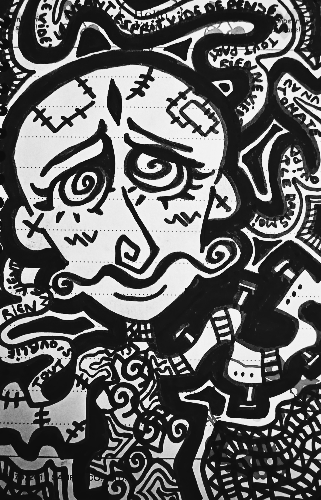

Mes oeuvres n'auront pas de nom, elles sont juste telles qu'elles sont.
Cette fois ci c'est le trouble de dépersonnalisation que j'ai représenté. Je voulais vraiment donner cette aspect robot, automate à ce personnage qui semble avoir une forme qui n'est pas la sienne. Je voulais aussi illustrer un esprit qui se vide totalement.On peut lire "Tout s'oublie,rien ne vient" ou encore "un automate qui parle dans moi": ca traduit un sentiment clair de ne plus se sentir dans son corps, un fort vide émotionnel, une dissociation de l'esprit et du corps. Avoir des crises de dépersonnalisation ce n'est pas grave, ca arrive a énormément de gens, et c'est une crise qui peut durer aussi bien 5min que des années.